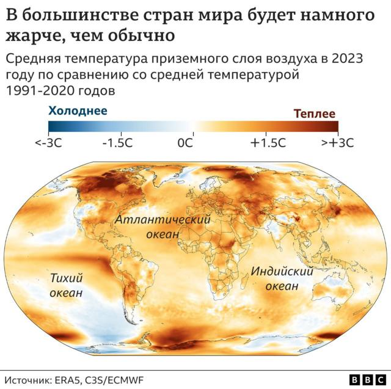
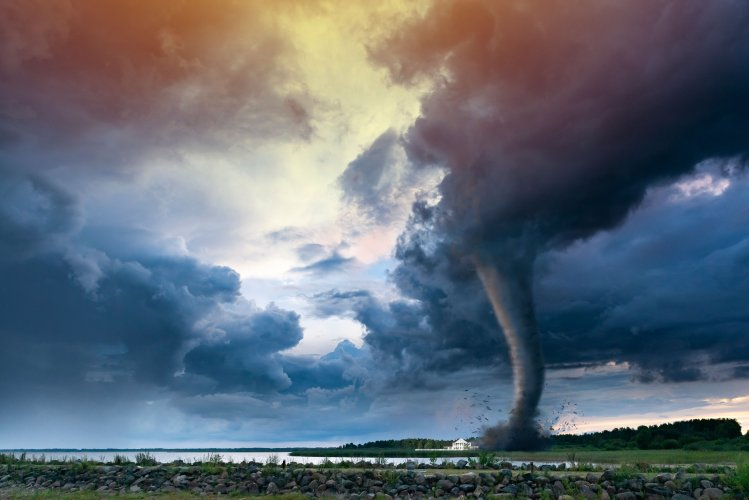
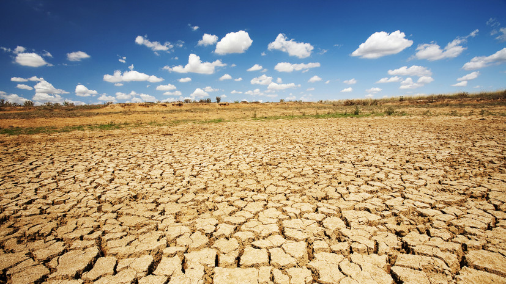
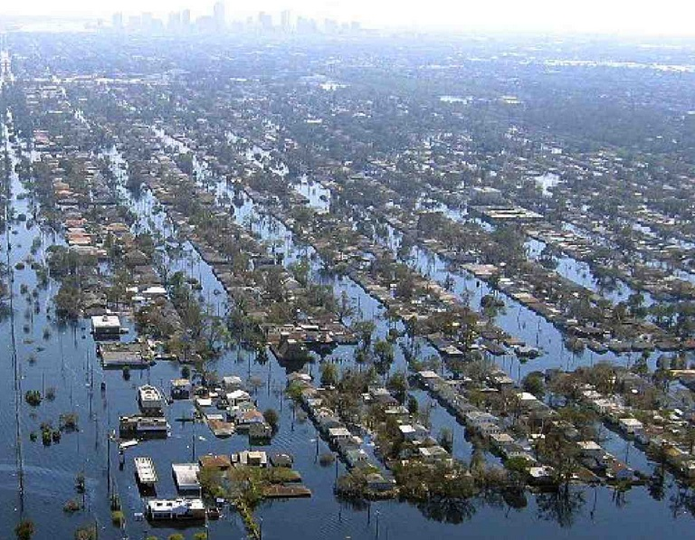
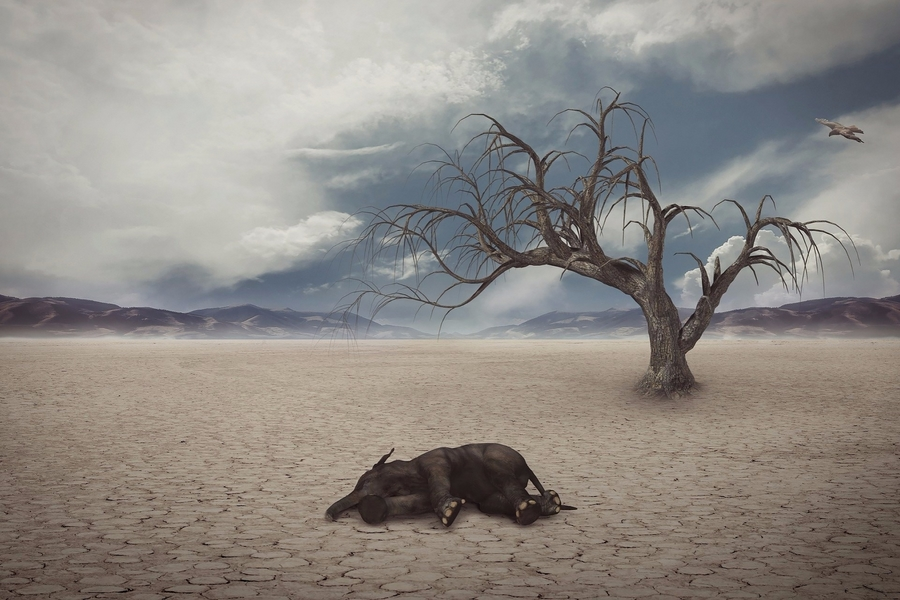
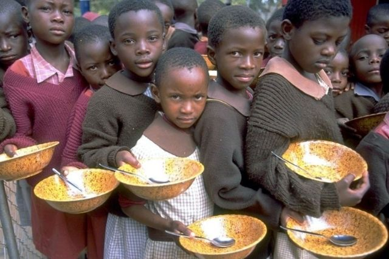
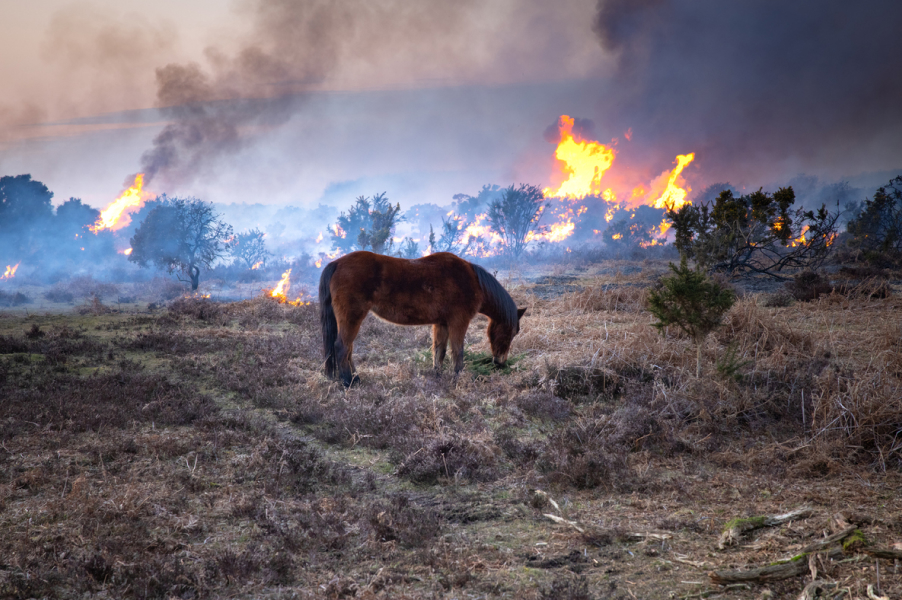
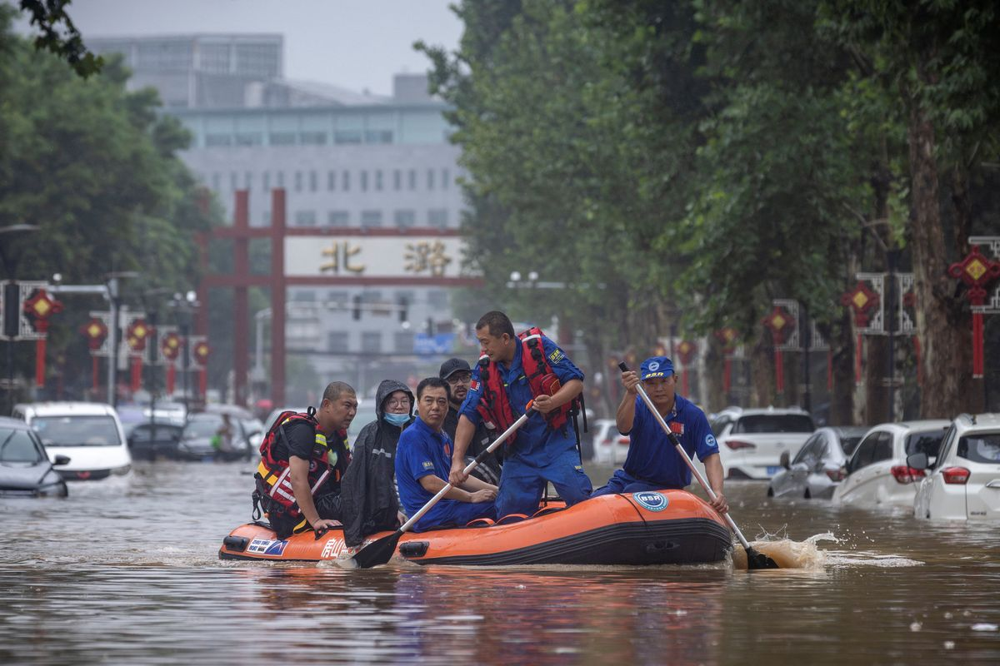

С увеличением концентрации парниковых газов растет и глобальная температура земной поверхности.
Последнее десятилетие – 2011–2020 годы – стало самым теплым за всю историю наблюдений. С 1980-х годов каждое десятилетие было теплее предыдущего.
Почти во всех районах суши наблюдается увеличение количества жарких дней и периодов аномальной жары.
Повышение температуры увеличивает количество заболеваний, связанных с жарой, и затрудняет работу на открытом воздухе.
Природные пожары легче возникают и быстрее распространяются в более жарких условиях.
Температура в Арктике повышалась по крайней мере вдвое быстрее, чем в среднем по миру

Усиление штормов:
Многие регионы столкнулись с увеличением интенсивности и частоты разрушительных штормов.
При повышении температуры испаряется больше влаги, что усиливает ливневые дожди и наводнения, вызывая более опасные штормы.
На частоту и масштабы тропических штормов также влияет потепление океана. Циклоны, ураганы и тайфуны формируются в теплых водах у поверхности океана.
Такие ураганы нередко разрушают дома и населенные пункты, становясь причиной гибели людей и огромных экономических потерь

Усиление засухи:
Изменение климата меняет степень доступности воды, делая ее более дефицитным ресурсом в растущем числе регионов.
Глобальное потепление усугубляет нехватку воды в регионах, и без того испытывающих ее дефицит, и увеличивает риск сельскохозяйственных засух,
влияющих на урожай, и экологических засух, повышающих уязвимость экосистем. Засухи также могут вызывать разрушительные песчаные и пыльные бури,
способные перемещать миллиарды тонн песка через континенты.
Пустыни расширяются, сокращая площадь земель для выращивания продовольственных культур.
Сегодня многие люди постоянно сталкиваются с угрозой нехватки воды

Потепление и повышение уровня океана:
Океан поглощает бóльшую часть тепла, образующегося в процессе глобального потепления.
За последние двадцать лет скорость, с которой океан нагревается, сильно возросла на всех его глубинах.
По мере потепления океана его объем увеличивается, поскольку при нагревании вода расширяется.
Таяние ледовых щитов также приводит к повышению уровня моря, угрожая прибрежным и островным сообществам.
Кроме того, океан поглощает из атмосферы углекислый газ.
При этом увеличение количества углекислого газа повышает кислотность океана, что ставит под угрозу морскую флору и фауну и коралловые рифы

Исчезновение видов:
Изменение климата создает риски для выживания видов на суше и в океане. Эти риски возрастают по мере повышения температуры.
Мир, положение в котором усугубляется изменением климата, теряет виды в тысячу раз быстрее, чем когда-либо в письменной истории человечества.
Миллион видов находится под угрозой исчезновения в течение следующих нескольких десятилетий.
В число многочисленных угроз, связанных с изменением климата, входят лесные пожары, экстремальные погодные условия и инвазивные вредители и заболевания.
Некоторые виды смогут сменить место обитания и выжить, а другие нет

Нехватка продуктов питания:
В группу причин глобального роста распространенности голода и неполноценного питания входят климатические изменения
и увеличение количества экстремальных погодных явлений.
Рыбные ресурсы, сельскохозяйственные культуры и домашний скот могут быть уничтожены или стать менее продуктивными.
В связи с закислением океана морские ресурсы, обеспечивающие питание для миллиардов людей, находятся под угрозой.
Изменения снежного и ледяного покрова во многих арктических регионах нарушили систему снабжения продовольствием,
обеспечиваемым за счет пастбищного животноводства, охоты и рыболовства.
Тепловой стресс может уменьшать количество воды и пастбищ,
что приводит к снижению урожайности сельскохозяйственных культур и негативным образом сказывается на поголовье скота

Увеличение рисков для здоровья:
Изменение климата – это самая большая угроза для здоровья людей. Его последствия уже наносят вред здоровью в связи с загрязнением воздуха,
распространением заболеваний, возникновением экстремальных погодных явлений, вынужденным перемещением,
оказанием давления на психику и обострением проблем голода и неполноценного питания в местах,
где люди не могут выращивать продовольственные культуры или обеспечить наличие достаточного количества пищевых продуктов.
Экологические факторы ежегодно уносят жизни около 13 млн человек.
Изменение погодных условий приводит к распространению заболеваний,
а экстремальные погодные явления увеличивают смертность и затрудняют работу систем здравоохранения

Нищета и вынужденное перемещение:
Изменение климата усиливает факторы, ввергающие людей в нищету и не позволяющие им исправить ситуацию, в которой они оказались.
Наводнения могут смести городские трущобы, разрушив дома и уничтожив источники средств к существованию.
Жара может затруднить работу на открытом воздухе. Нехватка воды может повлиять на урожай.
В последние десять лет (2010–2019 годы) связанные с погодой явления приводили к вынужденному перемещению в среднем около 23,1 млн человек в год,
повышая риск оказаться в нищете для еще большего числа людей.
Большинство беженцев прибывают из самых уязвимых стран, наименее готовых адаптироваться к последствиям изменения климата

Дополнительная информация по глобальному потеплению: